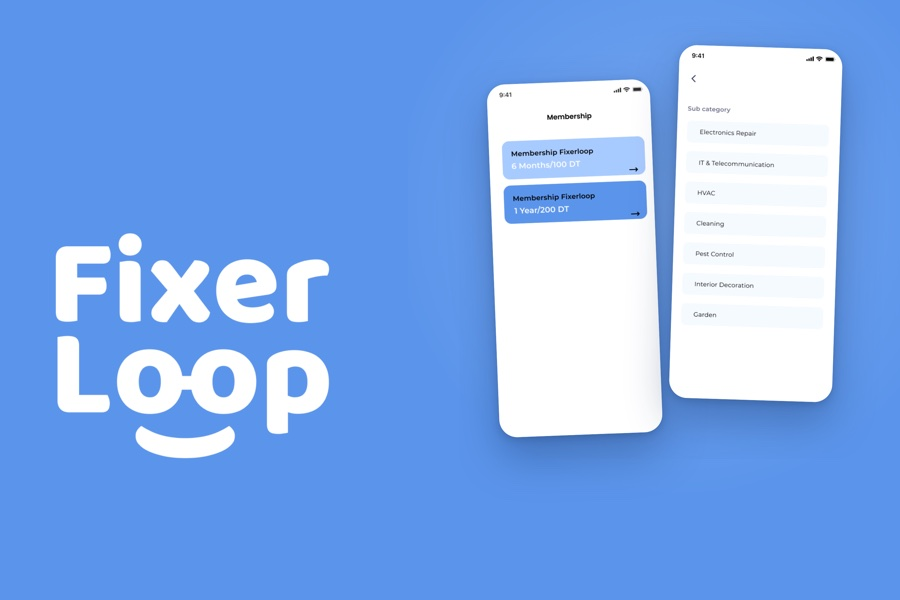

Case study
Fixerloop
An interface redesign for a services marketplace its own founder found confusing
Fixerloop connects homeowners with professional service providers. The founder came to me because the app had become too complicated to use — clashing colours, unclear copy and a flow he could not defend. The engagement was an interface redesign: 82 screens redrawn across the customer and provider apps, with a component library underneath them.

Intro
Fixerloop connects homeowners with service providers through a platform meant to be efficient, transparent and easy to use. I met the founder and we went through where the application was falling short. After research, the thing he kept returning to was that the design had to become genuinely user-friendly before anything else was worth doing.
The problem
The app was too complicated for users to understand. The colours did not work together. The text was unclear in places, and the whole thing was not simple to use. The founder was not convinced his own application was easy for a customer — which is about as direct a brief as you can get.
The solution
We tested, worked to understand where people were actually getting stuck, and rebuilt for clarity. The platform connects professional service providers with clients who need work done across several fields, so the design had to hold two distinct users — the customer looking for someone, and the provider managing requests and orders — without either flow feeling like an afterthought bolted onto the other.
Onboarding and verification
Two account types sign up through the same flow, splitting only where a provider has to prove who they are. Email and SMS confirmation, document upload and a preview step before submission.
Company profile setup
A provider is invisible until this is complete, so it is broken into short steps with its own progress and a clear finish state rather than presented as one long form.
The customer app
Search first, then browse by category, then compare providers on the three things that actually decide a hire: distance, verification and rating.
The provider app
The same system from the other side — appointments, incoming requests, and a public profile the provider controls.
Orders and messaging
Every order carries an explicit state, and the states are named in words as well as colour. Requests, chat, deadlines, review and expiry are all handled as designed screens rather than left to error text.
Settings and system screens
Settings, notifications and the shared tab bar.
A component library underneath
The rebuild sits on a real design system rather than a set of drawn screens: verified and unverified provider cards, provider list rows, rating and star components, message list items and chat bubbles for both sides of a conversation, order and request states including in-progress, primary buttons with icon variants, badges, and a full status-bar and navigation set. That is the reason the app holds together as flows were added — the consistency comes from the system, not from discipline applied screen by screen.
The outcome
The app shipped and fixerloop.com is live.
This was an interface job rather than a research one, and it is worth being exact about that. The founder already had a product that worked; what he had lost was an interface he could defend. So the work was execution at volume — 82 screens redrawn across both apps, and a library of 356 icons across 17 categories underneath them so the next screen would not start from nothing.
What I would claim from it is craft and consistency at scale, not a research insight. The result was a founder who could demo his own product again.